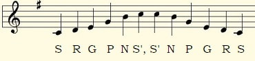
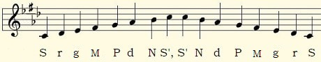
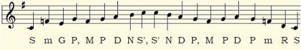

What Makes a Raga Difficult?
~A selection of difficult ragas~
Some ragas are more difficult to master than others. This could be because they involve difficult note intervals, because they use complex note patterns, because they use microtones, because they are too similar to other ragas, or other reasons.
This page explores a few such ragas. Ragas like Hamsadhwani, Kedar, and Deskar can be challenging for the artist even though they are pleasant and easy to listen to. On the other hand, ragas like Todi, Bhairav, and Marwa are both difficult to perform and intense in their moods.
Raag Hamsadhwani
Bright and happy Raag Hamsadhwani can be quite challenging, especially on instruments like the sitar, because it involves many wide note intervals. This raga is performed in the evening hours, after sunset, and lends itself beautifully to medium and lively tempos.

Raag Todi
Raag Todi on the other hand, has too many notes that are too close to each other. This makes it not just difficult to perform, but also disconcerting to hear. It is a serious and sombre raga, filled with pathos that is somehow accentuated by the mid-morning timing prescribed for its performance. Also note that the flat re (♭2) in this raga takes the grace note of flat ga (♭3).

Raag Kedar
Raag Kedar is a circuitous (vakra) raga. Circuitous ragas can be identified at a glance by their undulating ascending and descending scales. This happens because some of their notes are typically accessed through other notes or in specific note patterns. Ragas can be circuitous to different extents. Some ragas may have just one note that tends to be accessed indirectly, others may have several. The more circuitous a raga, the more challenging it is to improvise in it, because you're limited by the specific patterns and rules.
Kedar is serene at slower paces, but becomes lively and playful as the tempo rises. It is traditionally performed from late evening to midnight.

Let us meet agin in another lesson, Till then Happy Fluting!!